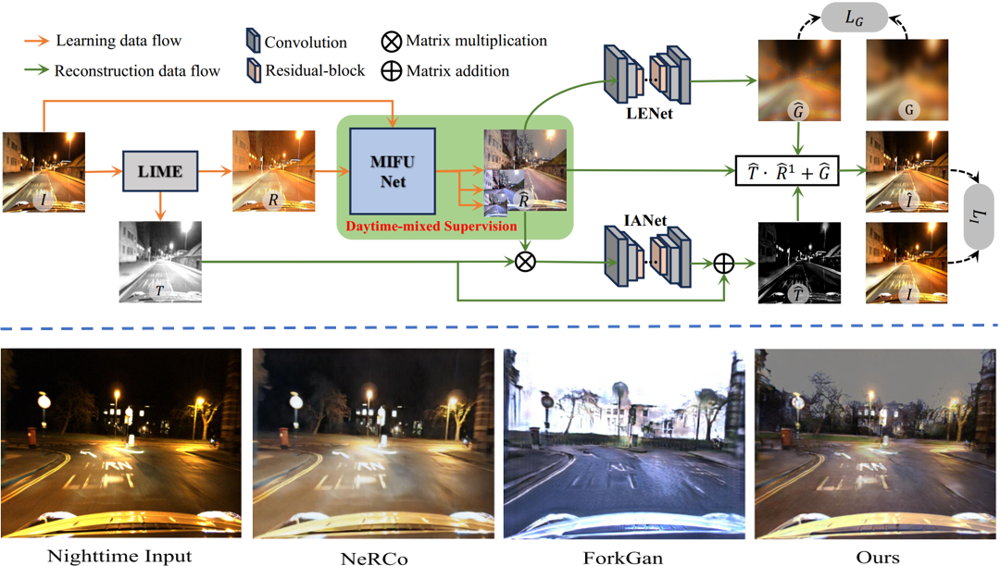

|
I am a Phd student at the PCALab of Nanjing University of Science and Technology, where I'm fortunate to be advised by Prof. Jian Yang and co-advised by Prof. Jun Li. Prior to joining NJUST, I obtained my M.S degree in 2019 from Wenzhou University, advised by Prof. Zhengzhou Tang. Email / GitHub / Google Scholar / WeChat |

|
{kind=link}
|
My research is focused on computer vision and image processing. I’m particularly interested in image restoration (e.g., real-world dehazing and depth estimation). Representative papers are highlighted. |
|
Junkai Fan, Kun Wang, Zhiqiang Yan, Jianjun Qian, Jian Yang*, Jun Li* Under Review, 2025
We propose a Physics-Guided Diffusion Model for dehazing, sampling RGB and depth from a pre-trained diffusion process.
It uses a Scattering-Blurred Atmospheric Scattering Model to generate high-fidelity dehazed images without aligned hazy/clear pairs,
a two-stage sampling with piecewise loss for better quality and stability, and post-processing to remove JPEG artifacts amplified by dehazing.
|
|  |
Jiangwei Weng, Junkai Fan, Jianjun Qian, Ying Tai, Jian Yang*, Jun Li* IEEE T-ITS, 2025
We propose a novel nighttime image enhancement framework using daytime-mixed misaligned supervision. It aims to couple information between non-aligned daytime and nighttime image pairs.
Specifically, our framework consists of a simple yet effective daytime-mixed supervised learning phase and a Retinex-based reconstruction phase.
|
|
Kun Wang, Zhiqiang Yan, Junkai Fan, Jun Li*, Jian Yang* arXiv, 2025
LP-Net uses a multi-scale, progressive depth completion method via Laplacian Pyramid, starting with global scene context and refining local details with selective filtering.
It achieves SOTA on indoor/outdoor datasets, is computationally efficient, and leads the KITTI leaderboard among peer-reviewed methods at submission.
|

|
Junkai Fan, Kun Wang, Zhiqiang Yan, Xiang Chen, Shangbin Gao, Jun Li*, Jian Yang* AAAI, 2025 project page / github / video / poster / slides
We propose a novel depth-centric learning framework that combines the atmospheric scattering model(ASM) model with the brightness consistency constraint (BCC) constraint.
The core idea is to use a shared depth estimation network for both ASM and BCC.
|

|
Wengxuan Fang, Junkai Fan, Yu Zheng, Jiangwei Weng, Ying Tai, Jun Li*, AAAI, 2025 project page / github
We propose a novel Structure Guided Dehazing Network (SGDN) that utilizes the superior structural properties of YCbCr features over RGB.
Additionally, we introduce the Real-World Well-Aligned Haze (RW2AH) dataset, featuring diverse scenes from various geographical and climatic conditions.
|

|
Kun Wang, Zhiqiang Yan, Junkai Fan, Wanlu Zhu, Xiang Li, Jun Li ✉, Jian Yang ✉ NeurIPS, 2024 project page / github / poster / slides
DCDepth uses discrete cosine transformation on depth patches to estimate frequency coefficients, capturing local depth correlations.
It separates depth into low-frequency (global structure) and high-frequency (details) components, predicting global context first and refining details progressively.
|
{kind=link}


|
Junkai Fan, Jiangwei Weng, Kun Wang, Yijun Yang, Jianjun Qian, Jun Li*, Jian Yang* CVPR, 2024 project page / github / video / poster
We present an innovative video dehazing framework for real-world driving scenarios, addressing temporal and spatial misalignment
challenges with non-aligned hazy/clear video pairs and a reference frame matching module.
|

|
Junkai Fan, Fei Guo, Jianjun Qian, Xiang Li, Jun Li*, Jian Yang* IEEE TCSVT, 2025 project page / github
Given an image or video captured in a real foggy scene, our model is capable of restoring the corresponding clear scene image or video.
Moreover, training our model does not require fully aligned ground truth (GT), which helps us collect real hazy scene data.
|
|
|
|
This webpage is fork from Jon Barron. Thanks to him! |